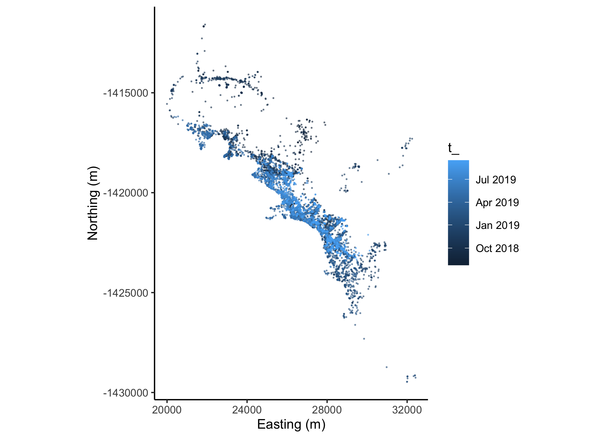
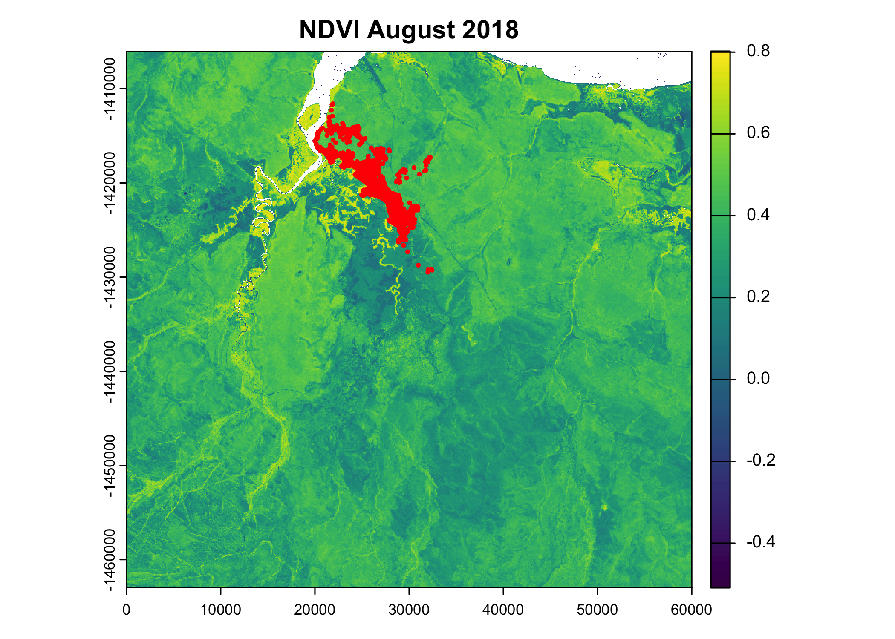
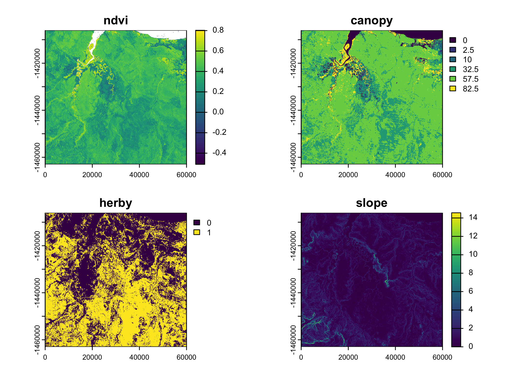

SSF Formulations
Abstract
In this script we demonstrate different approaches to including covariates in an SSF model.
Load required packages
Import data and clean
New names:
Rows: 133161 Columns: 11
── Column specification
──────────────────────────────────────────────────────── Delimiter: "," chr
(2): node, dates dbl (7): ...1, lat, lon, height, accuracy, heading, speed dttm
(2): timestamp, DateTime
ℹ Use `spec()` to retrieve the full column specification for this data. ℹ
Specify the column types or set `show_col_types = FALSE` to quiet this message.
• `` -> `...1`Code
# remove individuals that have poor data quality or less than about 3 months of data.
# The "2014.GPS_COMPACT copy.csv" string is a duplicate of ID 2024, so we exclude it
buffalo_data <- buffalo_data %>% filter(!node %in% c("2014.GPS_COMPACT copy.csv",
2029, 2043, 2265, 2284, 2346))
buffalo_data <- buffalo_data %>%
group_by(node) %>%
arrange(DateTime, .by_group = T) %>%
distinct(DateTime, .keep_all = T) %>%
arrange(node) %>%
mutate(ID = node)
buffalo_clean <- buffalo_data[, c(12, 2, 4, 3)]
colnames(buffalo_clean) <- c("id", "time", "lon", "lat")
attr(buffalo_clean$time, "tzone") <- "Australia/Queensland"
head(buffalo_clean)[1] "Australia/Queensland"Create a step object
Use the amt package to create a trajectory object from the cleaned data.
Plot the data spatially
Code

Pick out a single individual
Code
which_buffalo <- "2022" # select a single buffalo ID
buffalo_id <- buffalo_all %>% filter(id == which_buffalo)
buffalo_id %>%
ggplot(aes(x = x_, y = y_, colour = t_)) +
geom_point(alpha = 0.5, size = 0.1) +
coord_fixed() +
scale_x_continuous("Easting (m)") +
scale_y_continuous("Northing (m)") +
theme_classic()
Create steps
We will just use a steps object here for now
Import spatial covariates
Although NDVI changes over time, and we have access to monthly layers, we will just select a single month here.
Code

class : SpatRaster
dimensions : 2280, 2400, 1 (nrow, ncol, nlyr)
resolution : 25, 25 (x, y)
extent : 0, 60000, -1463000, -1406000 (xmin, xmax, ymin, ymax)
coord. ref. : GDA94 / Geoscience Australia Lambert (EPSG:3112)
source : ndvi_aug_2018.tif
name : ndvi
min value : -0.5441047
max value : 0.8086554 Code

Extract covariate values at the end of each step
Prepare data for extracting covariate information
Code
buffalo_id_steps <- buffalo_id_steps %>%
mutate(t1_ = lubridate::with_tz(buffalo_id_steps$t1_, tzone = "Australia/Darwin"),
t2_ = lubridate::with_tz(buffalo_id_steps$t2_, tzone = "Australia/Darwin"))
buffalo_id_steps <- buffalo_id_steps %>%
mutate(
# id_num = as.numeric(factor(id)),
# step_id = step_id_,
x1 = x1_, x2 = x2_,
y1 = y1_, y2 = y2_,
t1 = t1_,
t1_rounded = round_date(t1_, "hour"),
hour_t1 = hour(t1_rounded),
t2 = t2_,
t2_rounded = round_date(t2_, "hour"),
hour_t2 = hour(t2_rounded),
hour = ifelse(hour_t2 == 0, 24, hour_t2),
yday = yday(t1_),
year = year(t1_),
month = month(t1_),
sl = sl_,
log_sl = log(sl_),
ta = ta_,
cos_ta = cos(ta_),
canopy_01 = canopy/100)